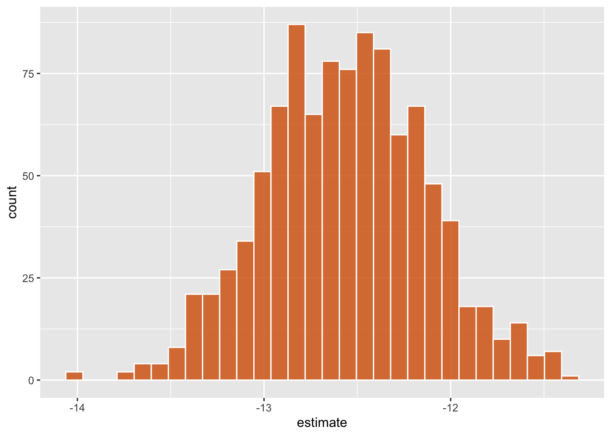
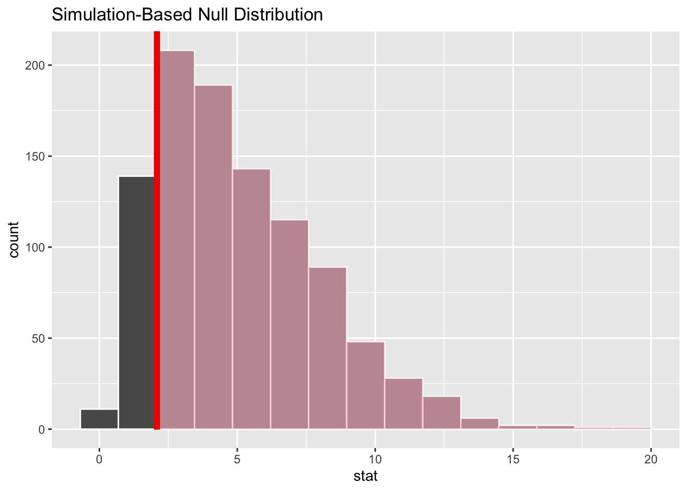
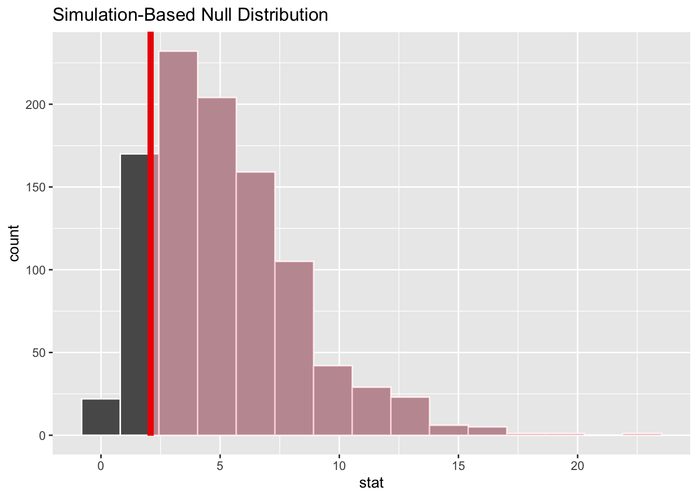
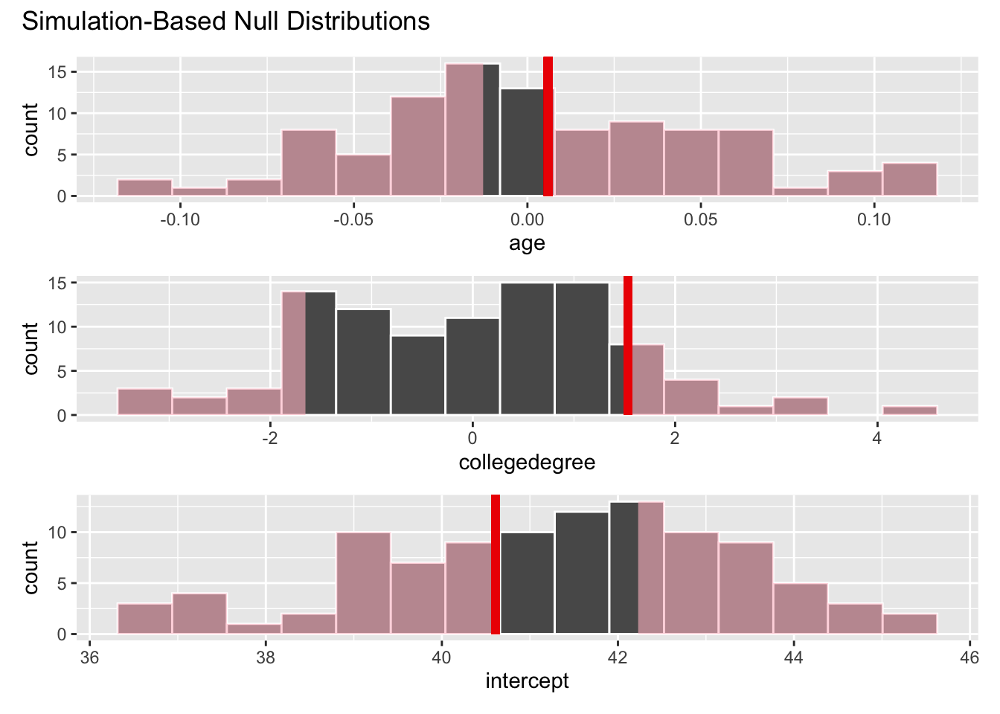
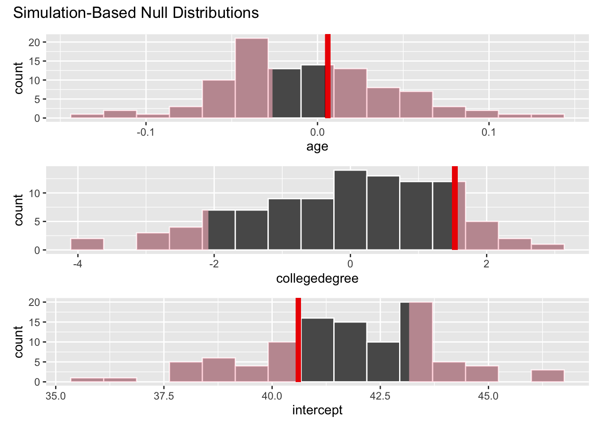

pak::pak("tidymodels/infer@causal")Tidy causal inference, four ways
The tidymodels team will be introducing support for causal inference!
There are already a plethora of principled and effective tools for causal inference in R. Our goal in “supporting causal inference” is not to provide our own tools for every step of the process. Rather, in places where our existing machinery has the potential ease pain points in current causal modeling workflows, we’d like to make the changes needed to become a helpful presence in a causal modeling toolkit.
While, in many ways, the tidymodels is not inherently incompatible with causal modeling workflows, the collection of packages is certainly prediction-forward. In causal inference, the most notable departure from our packages’ assumptions about what makes a “model” is the inclusion of propensity scoring methods. To gain a better understanding of how this new form of model could situate in tidymodels idioms, we’ll carry out the same task several different ways; given a description of a propensity model, propensity weighting method, and outcome model, resample the model to approximate a sampling distribution of a causal estimate. This is certainly not “the whole game” of causal modeling, but gives us a lens to surface many pain points at once.
We’ll outline a few different proposals for “tidy” interfaces to causal inference methods:
[As-is] the implementation of tidy causal inference implemented in Causal Inference in R, will serve as a reference point. The tooling situates
lm()andglm()fits in tidyverse syntax, occasionally making use of tidymodels for its data structures.[With tidymodels proper, no modifications] takes a similar approach, but substitutes
lm()andglm()with their parsnip wrappers and leans a bit more heavily on tidymodels’ data structures, easing the prickly points of interfacing with those models in a few places. To users with a familiarity for tidymodels idioms, though, this interface is a painful substitute for helpful tidymodels abstractions.[With infer] is based on a fork of the inference-forward tidymodels package infer. While the existing tooling nearly readily accommodates two-stage modeling workflows, many of the changes needed in the package are light (and probably unhelpful) abstractions of dplyr/purrr functionality, and the addition of this functionality would constitute a substantial departure from the package’s current scope.
[With tidymodels proper] is based on forks of the workflows and tune packages that make the minimal changes needed to accommodate “tidymodels-idiomatic” causal inference. It feels good.
Setup
For the infer examples, you will need to install the causal branch of infer:
Loading packages:
library(tidyverse)
library(tidymodels)
library(causalworkshop)
library(halfmoon)
library(propensity)
library(tipr)
tidymodels_prefer()As an example, we’ll excerpt the chapter “[t]he whole game: mosquito nets and malaria” from Causal Inference in R. Using the net_data data from the causalworkshop package, the chapter provides a worked example addressing the question:
…does using a bed net reduce the risk of malaria?
The net_data dataset looks like this:
str(net_data)tibble [1,752 × 10] (S3: tbl_df/tbl/data.frame)
$ id : int [1:1752] 1 2 3 4 5 6 7 8 9 10 ...
$ net : logi [1:1752] FALSE FALSE FALSE FALSE FALSE FALSE ...
$ net_num : int [1:1752] 0 0 0 0 0 0 0 0 0 0 ...
$ malaria_risk : num [1:1752] 38 48 32 55 36 30 29 45 51 42 ...
$ income : num [1:1752] 779 700 1083 753 919 ...
$ health : num [1:1752] 35 35 58 68 46 37 58 30 18 64 ...
$ household : num [1:1752] 1 3 3 3 5 3 1 2 3 3 ...
$ eligible : logi [1:1752] FALSE FALSE FALSE FALSE FALSE FALSE ...
$ temperature : num [1:1752] 18.3 18.6 24.2 19.1 21.2 20.2 18.9 28.8 19.9 21.4 ...
$ insecticide_resistance: num [1:1752] 38 40 70 57 59 49 52 42 66 45 ...As-is
The approach to resampling the modeling workflow to approxing the sampling distribution currently in Causal Inference in R combines some tidymodels machinery with base R modeling functions and some dplyr. The approach is, loosely:
Define a function that, given a data split, fits a propensity model, generates propensity scores based on that model, fits the outcome model using those scores, and returns its coefficients.
Take 1000 bootstrap samples using the rsample package.
Map the function over the 1000 samples.
fit_ipw <- function(split, ...) {
# get bootstrapped data sample with `rsample::analysis()`
.df <- analysis(split)
# fit propensity score model
propensity_model <- glm(
net ~ income + health + temperature,
data = .df,
family = binomial()
)
# calculate inverse probability weights
.df <- propensity_model |>
augment(type.predict = "response", data = .df) |>
mutate(wts = wt_ate(.fitted, net))
# fit correctly bootstrapped ipw model
lm(malaria_risk ~ net, data = .df, weights = wts) |>
tidy()
}
set.seed(1)
bootstrapped_net_data <- bootstraps(
net_data,
times = 1000,
# required to calculate CIs later
apparent = TRUE
)
res_rc <- bootstrapped_net_data |>
mutate(boot_fits = map(splits, fit_ipw))
res_rc# Bootstrap sampling with apparent sample
# A tibble: 1,001 × 3
splits id boot_fits
<list> <chr> <list>
1 <split [1752/634]> Bootstrap0001 <tibble [2 × 5]>
2 <split [1752/626]> Bootstrap0002 <tibble [2 × 5]>
3 <split [1752/633]> Bootstrap0003 <tibble [2 × 5]>
4 <split [1752/658]> Bootstrap0004 <tibble [2 × 5]>
5 <split [1752/654]> Bootstrap0005 <tibble [2 × 5]>
6 <split [1752/625]> Bootstrap0006 <tibble [2 × 5]>
7 <split [1752/619]> Bootstrap0007 <tibble [2 × 5]>
8 <split [1752/630]> Bootstrap0008 <tibble [2 × 5]>
9 <split [1752/615]> Bootstrap0009 <tibble [2 × 5]>
10 <split [1752/635]> Bootstrap0010 <tibble [2 × 5]>
# … with 991 more rowsTo visualize the approximation of the sampling distribution for the causal estimate of the effect of introducing a net, extract the estimate from each of the 1000 model fits and build a histogram:
res_rc |>
mutate(
estimate = map_dbl(
boot_fits,
# pull the `estimate` for `netTRUE` for each fit
\(.fit) .fit |>
filter(term == "netTRUE") |>
pull(estimate)
)
) |>
ggplot(aes(estimate)) +
geom_histogram(fill = "#D55E00FF", color = "white", alpha = 0.8, bins = 30)
With tidymodels proper, no modifications
A tidymodels-esque approach using only currently implemented syntax could switch out lm() and glm() for their tidymodels analogues. These lines also situate the modeling steps as row-wise mutate()s rather than in a stand-alone function, but those changes aren’t necessary.
set.seed(1)
res_tm <-
net_data %>%
mutate(net = as.factor(net)) %>%
bootstraps(times = 1000, apparent = TRUE) %>%
mutate(
res = map(splits, analysis)
) %>%
rowwise() %>%
mutate(
fit_propensity = list(fit(logistic_reg(), net ~ income + health + temperature, res)),
res = list(bind_cols(res, predict(fit_propensity, res, type = "prob"))),
res = list(res %>% mutate(wts = wt_ate(.pred_TRUE, net, .treated = "TRUE"),
wts = importance_weights(wts))),
fit_outcome = list(fit(linear_reg(), malaria_risk ~ net, res, case_weights = res$wts))
)Note that this is, roughly, just an “unpacked” call to fit_resamples(), where the propensity model, weighting based on its predictions, and outcome model are combined into one workflow. See With tidymodels proper below for an implementation of that idea!
Reproducing the same plot:
res_tm %>%
mutate(
estimate = tidy(fit_outcome) %>% filter(term == "netTRUE") %>% pull(estimate)
) %>%
ggplot(aes(estimate)) +
geom_histogram(fill = "#D55E00FF", color = "white", alpha = 0.8, bins = 30)
With infer
While the infer package has been situated in the tidymodels GitHub organization and meta-package since the beginning, it shares more in philosophy than functionality with the core tidymodels packages. So, a primer on infer for the uninitiated:
The infer package
The infer package was developed by a group of educators with the goal of providing a data-forward interface to basic statistical inferential tools. The package is intended for use in teaching first-courses for statistics at undergraduate universities, and discussions about the package’s scope have looked closely to that framing.
The package is, loosely, an implementation of Alley Downey’s “there is only one test” blog post, the idea being that many of the fundamental tests in statistical inference—t-tests, Chi-squared tests of independence, ANOVAs, etc.—are special cases of a more general process. “Tests” involve the juxtaposition of a test statistic and its randomization-based null distribution, sometimes generating a p-value, and can be carried out via four elementary operations:
specify()allows you to specify the variable, or relationship between variables, that you’re interested in.hypothesize()allows you to declare the null hypothesis.generate()allows you to generate data reflecting the null hypothesis.calculate()allows you to calculate a distribution of statistics from the generated data to form the null distribution.
We’ll use the gss data from the infer package to demonstrate these four verbs.
str(gss)tibble [500 × 11] (S3: tbl_df/tbl/data.frame)
$ year : num [1:500] 2014 1994 1998 1996 1994 ...
$ age : num [1:500] 36 34 24 42 31 32 48 36 30 33 ...
$ sex : Factor w/ 2 levels "male","female": 1 2 1 1 1 2 2 2 2 2 ...
$ college: Factor w/ 2 levels "no degree","degree": 2 1 2 1 2 1 1 2 2 1 ...
$ partyid: Factor w/ 5 levels "dem","ind","rep",..: 2 3 2 2 3 3 1 2 3 1 ...
$ hompop : num [1:500] 3 4 1 4 2 4 2 1 5 2 ...
$ hours : num [1:500] 50 31 40 40 40 53 32 20 40 40 ...
$ income : Ord.factor w/ 12 levels "lt $1000"<"$1000 to 2999"<..: 12 11 12 12 12 12 12 12 12 10 ...
$ class : Factor w/ 6 levels "lower class",..: 3 2 2 2 3 3 2 3 3 2 ...
$ finrela: Factor w/ 6 levels "far below average",..: 2 2 2 4 4 3 2 4 3 1 ...
$ weight : num [1:500] 0.896 1.083 0.55 1.086 1.083 ...Carrying out a “t-test” by calculating a test statistic from observed data, generating a distribution of test statistics under the null hypothesis, and then juxtaposing the observed statistic with the null distribution:
# calculate the observed statistic
t_bar <-
gss %>%
specify(hours ~ NULL) %>%
hypothesize(null = "point", mu = 40) %>%
calculate(stat = "t")
t_barResponse: hours (numeric)
Null Hypothesis: point
# A tibble: 1 × 1
stat
<dbl>
1 2.09# generate the null distribution
null_dist <-
gss %>%
specify(response = hours) %>%
hypothesize(null = "point", mu = 40) %>%
generate(reps = 1000, type = "bootstrap") %>%
calculate(stat = "t")
null_distResponse: hours (numeric)
Null Hypothesis: point
# A tibble: 1,000 × 2
replicate stat
<int> <dbl>
1 1 -2.13
2 2 -0.293
3 3 -0.469
4 4 1.36
5 5 -1.08
6 6 -1.12
7 7 -0.335
8 8 0.986
9 9 0.911
10 10 0.404
# … with 990 more rows# visualizing the observed statistic alongside the null distribution
visualize(null_dist) +
shade_p_value(obs_stat = t_bar, direction = "two-sided")
# calculating the p-value from the null distribution and observed statistic
null_dist %>%
get_p_value(obs_stat = t_bar, direction = "two-sided")# A tibble: 1 × 1
p_value
<dbl>
1 0.03The same steps apply to, say, a Chi-squared test of independence:
# calculate the observed statistic
Chisq_hat <-
gss %>%
specify(formula = finrela ~ sex) %>%
hypothesize(null = "independence") %>%
calculate(stat = "Chisq")
Chisq_hatResponse: finrela (factor)
Explanatory: sex (factor)
Null Hypothesis: independence
# A tibble: 1 × 1
stat
<dbl>
1 9.11# generate the null distribution
null_dist <-
gss %>%
specify(finrela ~ sex) %>%
hypothesize(null = "independence") %>%
generate(reps = 1000, type = "permute") %>%
calculate(stat = "Chisq")
null_distResponse: finrela (factor)
Explanatory: sex (factor)
Null Hypothesis: independence
# A tibble: 1,000 × 2
replicate stat
<int> <dbl>
1 1 1.95
2 2 2.92
3 3 2.32
4 4 4.60
5 5 4.30
6 6 6.43
7 7 8.58
8 8 1.83
9 9 7.87
10 10 6.34
# … with 990 more rows# visualizing the observed statistic alongside the null distribution
visualize(null_dist) +
shade_p_value(obs_stat = t_bar, direction = "greater")
# calculating the p-value from the null distribution and observed statistic
null_dist %>%
get_p_value(obs_stat = t_bar, direction = "greater")# A tibble: 1 × 1
p_value
<dbl>
1 0.855In summer 2021, we implemented an additional semi-core verb, a fit() method for infer objects, to better accommodate the multivariate thinking increasingly spoken to in introductory courses. The method is limited and coefficient-forward in how it specifies a “model;” the output is a situated version of broom::tidy(model) rather than model.
Revisiting the example of modeling the number of hours worked per week, with an additional predictor:
# model the observed fit
observed_fit <-
gss %>%
specify(hours ~ age + college) %>%
fit()
observed_fit# A tibble: 3 × 2
term estimate
<chr> <dbl>
1 intercept 40.6
2 age 0.00596
3 collegedegree 1.53 # fit 100 models to resamples of the gss dataset, where
# the response `hours` is permuted in each.
null_fits <-
gss %>%
specify(hours ~ age + college) %>%
hypothesize(null = "independence") %>%
generate(reps = 100, type = "permute") %>%
fit()
null_fits# A tibble: 300 × 3
# Groups: replicate [100]
replicate term estimate
<int> <chr> <dbl>
1 1 intercept 38.9
2 1 age 0.0517
3 1 collegedegree 1.02
4 2 intercept 40.0
5 2 age 0.0302
6 2 collegedegree 0.382
7 3 intercept 44.2
8 3 age -0.0631
9 3 collegedegree -0.765
10 4 intercept 41.8
# … with 290 more rows# visualizing the observed coefficients alongside their null distributions
visualize(null_fits) +
shade_p_value(obs_stat = observed_fit, direction = "both")# calculating the p-value from the null distributions and observed coefficients
null_fits %>%
get_p_value(obs_stat = observed_fit, direction = "both")# A tibble: 3 × 2
term p_value
<chr> <dbl>
1 age 0.82
2 collegedegree 0.24
3 intercept 0.72A causal interface in infer
The causal branch of infer implements a few modifications to the core functions to accommodate a two-stage causal inference workflow:
As-is, the package only carries around variables identified as outcomes or predictors. This makes bringing the actual outcome (as in, not propensity) variable along during the propensity modeling stage a bit tricky. The
causalbranch implements akeepargument tospecify()which “unused” variables to bring along.There is already an issue on the package repository proposing an argument, called
summarizehere, that summarizesfit.infer()output given some function other thanbroom::tidy(). Supplying something likebroom::augment()to that argument effectively links the propensity model and the outcome model in one infer “pipeline.”
set.seed(1)
res_in <- net_data %>%
mutate(net = as.factor(net)) %>%
specify(net ~ income + health + temperature, keep = malaria_risk) %>%
generate(reps = 1000, type = "bootstrap") %>%
fit(summarize = function(model, data) {
bind_cols(data, data.frame(.pred = predict(model, data, type = "response")))
}) %>%
# note that `replicate` is already a grouping variable at this point.
mutate(wts = wt_ate(.pred, net, .treated = "TRUE"),
wts = importance_weights(wts)) %>%
specify(malaria_risk ~ net, keep = c(wts, replicate)) %>%
# problem: want to pass `wts` group-wise, but the weights argument is
# taken as a numeric vector rather than a quosure. can eventually work
# around in fit.infer if needed to properly vectorize on `replicate`.
nest(data = -replicate) %>%
rowwise() %>%
mutate(fit = list(fit(data, weights = data$wts))) %>%
unnest(fit)
res_in# A tibble: 2,000 × 4
replicate data term estimate
<dbl> <list> <chr> <dbl>
1 1 <infer [1,752 × 3]> intercept 42.6
2 1 <infer [1,752 × 3]> netTRUE -12.2
3 2 <infer [1,752 × 3]> intercept 42.4
4 2 <infer [1,752 × 3]> netTRUE -12.3
5 3 <infer [1,752 × 3]> intercept 43.0
6 3 <infer [1,752 × 3]> netTRUE -12.0
7 4 <infer [1,752 × 3]> intercept 42.9
8 4 <infer [1,752 × 3]> netTRUE -12.8
9 5 <infer [1,752 × 3]> intercept 42.5
10 5 <infer [1,752 × 3]> netTRUE -12.8
# … with 1,990 more rowsAnd, it works:
res_in %>%
filter(term == "netTRUE") %>%
ggplot(aes(estimate)) +
geom_histogram(fill = "#D55E00FF", color = "white", alpha = 0.8, bins = 30)
With tidymodels proper
At surface level, workflows will just need to introduce a few new functions to accommodate propensity-related modeling steps. These changes are actually quite fundamental, though, because they mean that add_*() steps now need to become composable and respect order. Re: composability, for example, add_model() steps currently don’t allow for the addition of a model unless there is no existing model, but now need to allow both a propensity and outcome model to exist in the workflow. As for ordering, these functions assign weights which can be passed explicitly via an argument by the same name.
set.seed(1)
causal_wf <-
workflow() %>%
add_formula(net ~ income + health + temperature) %>%
add_model_propensity(logistic_reg()) %>%
add_propensity_weights(wt_ate) %>%
add_formula(malaria_risk ~ net) %>%
add_model_outcome(linear_reg())
res_tm2 <- fit_resamples(causal_wf, bootstraps(net_data, 1000, apparent = TRUE))Here:
add_propensity_weights()is named to match patterning withadd_case_weights(). Unlike that function, it does not take numeric values, because those values are determined by the output of the propensity model. It does need some function to take \((\hat{y}, y) \to c\) for propensity “outcome” \(y\) and scores \(c\), e.g.wt_ate()and friends.add_model_outcome()is an alias foradd_model(), named to match patterning withadd_model_propensity().Associating pairs of preprocessors and models will require some thought—preprocessors and models with the same
weightcould be associated with each other, and pairs that appear consecutively in a pipeline could be assigned the same weight by default. Or,add_formula()could have analogous variants toadd_model_propensity()andadd_model_outcome().
Recent work on post-processing in tidymodels shares the need for composability and ordering in workflows, so the needed infrastructure here is on its way soon anyway. The technical hurdles here, then, aren’t actually too cumbersome.